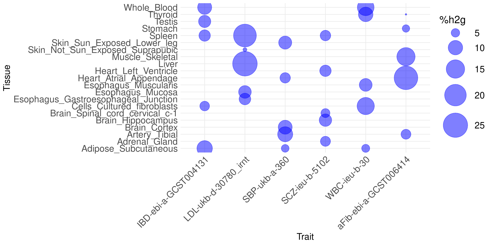
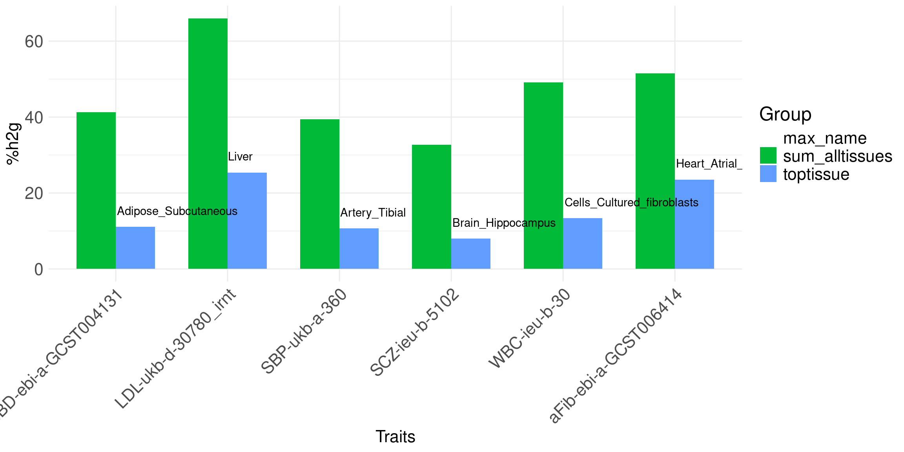
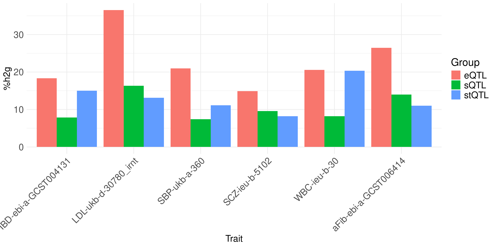

Last updated: 2024-10-17
Checks: 6 1
Knit directory: multigroup_ctwas_analysis/
This reproducible R Markdown analysis was created with workflowr (version 1.7.0). The Checks tab describes the reproducibility checks that were applied when the results were created. The Past versions tab lists the development history.
The R Markdown is untracked by Git. To know which version of the R
Markdown file created these results, you’ll want to first commit it to
the Git repo. If you’re still working on the analysis, you can ignore
this warning. When you’re finished, you can run
wflow_publish to commit the R Markdown file and build the
HTML.
Great job! The global environment was empty. Objects defined in the global environment can affect the analysis in your R Markdown file in unknown ways. For reproduciblity it’s best to always run the code in an empty environment.
The command set.seed(20231112) was run prior to running
the code in the R Markdown file. Setting a seed ensures that any results
that rely on randomness, e.g. subsampling or permutations, are
reproducible.
Great job! Recording the operating system, R version, and package versions is critical for reproducibility.
Nice! There were no cached chunks for this analysis, so you can be confident that you successfully produced the results during this run.
Great job! Using relative paths to the files within your workflowr project makes it easier to run your code on other machines.
Great! You are using Git for version control. Tracking code development and connecting the code version to the results is critical for reproducibility.
The results in this page were generated with repository version eb58424. See the Past versions tab to see a history of the changes made to the R Markdown and HTML files.
Note that you need to be careful to ensure that all relevant files for
the analysis have been committed to Git prior to generating the results
(you can use wflow_publish or
wflow_git_commit). workflowr only checks the R Markdown
file, but you know if there are other scripts or data files that it
depends on. Below is the status of the Git repository when the results
were generated:
Ignored files:
Ignored: .Rhistory
Untracked files:
Untracked: analysis/multi_group_6traits_15weights_ess_summary.Rmd
Unstaged changes:
Modified: analysis/multi_group_6traits_15weights_ukbb_munro_summary.Rmd
Note that any generated files, e.g. HTML, png, CSS, etc., are not included in this status report because it is ok for generated content to have uncommitted changes.
There are no past versions. Publish this analysis with
wflow_publish() to start tracking its development.
We summarize the results here: https://sq-96.github.io/multigroup_ctwas_analysis/multi_group_6traits_15weights_ess.html
library(ggplot2)
library(ctwas)
library(dplyr)
library(tidyr)
traits <- c("aFib-ebi-a-GCST006414","LDL-ukb-d-30780_irnt","IBD-ebi-a-GCST004131", "SBP-ukb-a-360", "SCZ-ieu-b-5102", "WBC-ieu-b-30")
load("/project2/xinhe/shared_data/multigroup_ctwas/gwas/samplesize.rdata")
sum_pve_across <- function(ctwas_parameters, by = c("type", "context")){
pve <- round(ctwas_parameters$group_pve, 4)
pve <- as.data.frame(pve)
SNP_pve <- pve["SNP",]
pve$context <- sapply(rownames(pve), function(x) { unlist(strsplit(x, "[|]"))[1] })
pve$type <- sapply(rownames(pve), function(x) { unlist(strsplit(x, "[|]"))[2] })
pve <- na.omit(pve)
pve <- pve[order(rownames(pve)),]
# Aggregate based on the `by` argument
df_pve <- aggregate(pve$pve, by=list(pve[[by]]), FUN=sum)
colnames(df_pve) <- c(by, "total_pve")
df_pve$total_pve <- round(df_pve$total_pve, 4)
# Add context/type-specific columns
other_var <- setdiff(c("type", "context"), by)
for(j in unique(pve[[other_var]])){
df_pve[,j] <- pve[pve[[other_var]] == j,]$pve
}
# Handle SNP row
df_pve["SNP", ] <- 0
df_pve["SNP", "total_pve"] <- SNP_pve
df_pve["SNP", by] <- "SNP"
row.names(df_pve) <- NULL
return(df_pve)
}sum_pve_tissue_alltraits <- list()
sum_pve_modality_alltraits <- list()
for (i in 1:length(traits)) {
trait <- traits[i]
gwas_n <- samplesize[trait]
ctwas_res <-readRDS(paste0("/project/xinhe/xsun/multi_group_ctwas/11.multi_group_1008/results/",trait,"/",trait,".ctwas.res.RDS"))
param <- ctwas_res$param
ctwas_parameters <- summarize_param(param, gwas_n)
sum_pve_tissue <- sum_pve_across(ctwas_parameters, by="context")
sum_pve_tissue_total <- sum_pve_tissue$total_pve
names(sum_pve_tissue_total) <- sum_pve_tissue$context
sum_pve_tissue_alltraits[[i]] <- sum_pve_tissue_total
sum_pve_modality <- sum_pve_across(ctwas_parameters, by="type")
sum_pve_modality_total <- sum_pve_modality$total_pve
names(sum_pve_modality_total) <- sum_pve_modality$type
sum_pve_modality_alltraits[[i]] <- sum_pve_modality_total
}
names(sum_pve_tissue_alltraits) <- traits
names(sum_pve_modality_alltraits) <- traitsBubble plot: show %h2g explained by molecular QTLs of each tissue on each trait. Use union of five tissues across all traits.
Message: cTWAS is able to find the right tissues.
sum_pve_tissue_percentages <- lapply(sum_pve_tissue_alltraits, function(x) x / sum(x) * 100)
cluster_names <- names(sum_pve_tissue_percentages)
filtered_list <- lapply(sum_pve_tissue_percentages, function(x) x[!names(x) %in% c("SNP")])
# Calculate the sum of each vector in the filtered list
sum_values <- sapply(filtered_list, sum)
max_values <- sapply(filtered_list, max)
# Calculate the names of maximum values for each vector in the filtered list
max_names <- sapply(filtered_list, function(x) names(x)[which.max(x)])df <- bind_rows(
lapply(names(filtered_list), function(x) {
data.frame(Trait = x, Tissue = names(filtered_list[[x]]), Expression = filtered_list[[x]], stringsAsFactors = FALSE)
}),
.id = "id"
) %>%
dplyr::select(-id) %>%
spread(Trait, Expression)
df_long <- reshape2::melt(df, id.vars = "Tissue", variable.name = "Trait", value.name = "Expression")
ggplot(df_long, aes(x = Trait, y = Tissue, size = Expression)) +
geom_point(alpha = 0.5, color = "blue") + # Using a fixed color for all bubbles
scale_size(range = c(1, 20), name = "%h2g") + # Customizing the size legend title
labs(x = "Trait", y = "Tissue") +
theme_minimal() +
theme(axis.text.x = element_text(size = 16, angle = 45, hjust = 1),
axis.text.y = element_text(size = 16),
axis.title.x = element_text(size = 16),
axis.title.y = element_text(size = 16),
legend.text = element_text(size = 16), # Increase legend text size
legend.title = element_text(size = 18))
Contributions of top tissue vs. all tissues together.
Bar plot of %h2g: two bars, top tissue vs. all tissues together, per trait. Use the top tissue from joint analysis.
Message: genetics of complex traits involve multiple tissues.
# Create the data frame including names of maximum values
data <- data.frame(
cluster = rep(cluster_names, times = 3),
value = c(max_values, sum_values, max_values),
type = c(rep("toptissue", times = length(cluster_names)),
rep("sum_alltissues", times = length(cluster_names)),
rep("max_name", times = length(cluster_names))),
label = c(rep("", times = length(cluster_names) * 2), max_names)
)
ggplot(data[data$type != "max_name", ], aes(x = cluster, y = value, fill = type)) +
geom_bar(stat = "identity", position = position_dodge(), width = 0.7) +
geom_text(data = data[data$type == "max_name", ], aes(label = label, y = value + 2),
position = position_dodge(width = 0.7), vjust = -0.5, hjust=-0.01) +
labs(x = "Traits", y = "%h2g", fill = "Group") +
theme_minimal() +
theme(axis.text.x = element_text(size = 16, angle = 45, hjust = 1),
axis.text.y = element_text(size = 16),
axis.title.x = element_text(size = 16),
axis.title.y = element_text(size = 16),
legend.text = element_text(size = 16), # Increase legend text size
legend.title = element_text(size = 18))
Number of high PIP genes: all tissues vs. best tissue eQTL (from single tissue analysis).
Bar plot.
Message: increased power from multi-omics multi-tissue analysis.
load("/project/xinhe/xsun/multi_group_ctwas/11.multi_group_1008/postprocess/compare_multi_single_genenum.rdata")
sum$num_multi <- as.numeric(sum$num_multi)
sum$num_single <- as.numeric(sum$num_single)
sum$overlap <- as.numeric(sum$overlap)
sum$overlap_adj <- as.numeric(sum$overlap) * 1.001 # Adjust the value to slightly offset behind the main bars
data_long <- pivot_longer(sum, cols = c(num_single, num_multi), names_to = "category", values_to = "count")
# Facet by trait, with tissues as the bars
# ggplot(data_long, aes(x = tissue_single, y = count, fill = category)) +
# geom_bar(stat = "identity", position = position_dodge(width = 0.8), width = 0.8) +
# geom_bar(data = sum, aes(x = tissue_single, y = overlap_adj), stat = "identity", position = position_dodge(width = 0.8), fill = "grey", alpha = 0.7, width = 0.8) +
# facet_wrap(~ trait, nrow = 1, scales = "free_x") + # Display all facets in one row with free scales on x
# labs(x = "Tissue", y = "Number of Genes with PIP>0.8") +
# scale_fill_manual(values = c("num_single" = "skyblue", "num_multi" = "orange")) +
# theme_minimal() +
# theme(axis.text.x = element_text(size = 12, angle = 45, vjust = 0.7, hjust = 0.6), # Adjusted hjust here
# axis.text.y = element_text(size = 12),
# axis.title.x = element_text(size = 14),
# axis.title.y = element_text(size = 14),
# strip.background = element_blank(),
# strip.text.x = element_text(size = 12, face = "bold"))
# ggplot(data_long, aes(x = trait, y = count, fill = category)) +
# geom_bar(stat = "identity", position = position_dodge(width = 0.8), width = 0.8) +
# geom_bar(data = data_long, aes(x = trait, y = overlap_adj), stat = "identity", position = position_dodge(width = 0.8), fill = "grey", alpha = 0.7, width = 0.8) +
# facet_wrap(~ tissue_single, nrow = 1, scales = "free_x") + # Swap to display facets by tissue_single
# labs(x = "Trait", y = "Number of Genes with PIP>0.8") +
# scale_fill_manual(values = c("num_single" = "skyblue", "num_multi" = "orange")) +
# theme_minimal() +
# theme(axis.text.x = element_text(size = 12, angle = 45, vjust = 0.7, hjust = 0.6), # Adjusted hjust here
# axis.text.y = element_text(size = 12),
# axis.title.x = element_text(size = 14),
# axis.title.y = element_text(size = 14),
# strip.background = element_blank(),
# strip.text.x = element_text(size = 12, face = "bold"))
ggplot(data_long, aes(x = trait, y = count, fill = category)) +
geom_bar(stat = "identity", position = position_dodge(width = 0.8), width = 0.8) +
geom_bar(aes(x = trait, y = overlap_adj), stat = "identity", position = position_dodge(width = 0.8), fill = "grey", alpha = 0.7, width = 0.8) +
# Add tissue labels only once above the blue bars (num_single)
geom_text(data = subset(data_long, category == "num_single"),
aes(label = tissue_single),
position = position_dodge(width = 0.8),
vjust = -0.5,
hjust = 0.3,
color = "black",
size = 4) +
labs(x = "Trait", y = "Number of Genes with PIP>0.8") +
scale_fill_manual(values = c("num_single" = "skyblue", "num_multi" = "orange")) +
theme_minimal() +
theme(axis.text.x = element_text(size = 12, angle = 45, vjust = 0.7, hjust = 0.6),
axis.text.y = element_text(size = 12),
axis.title.x = element_text(size = 14),
axis.title.y = element_text(size = 14),
strip.background = element_blank(),
strip.text.x = element_text(size = 12, face = "bold"))
sessionInfo()R version 4.2.0 (2022-04-22)
Platform: x86_64-pc-linux-gnu (64-bit)
Running under: CentOS Linux 7 (Core)
Matrix products: default
BLAS/LAPACK: /software/openblas-0.3.13-el7-x86_64/lib/libopenblas_haswellp-r0.3.13.so
locale:
[1] C
attached base packages:
[1] stats graphics grDevices utils datasets methods base
other attached packages:
[1] tidyr_1.3.0 dplyr_1.1.4 ctwas_0.4.15 ggplot2_3.5.1
loaded via a namespace (and not attached):
[1] colorspace_2.0-3 rjson_0.2.21
[3] ellipsis_0.3.2 rprojroot_2.0.3
[5] XVector_0.36.0 locuszoomr_0.2.1
[7] GenomicRanges_1.48.0 fs_1.5.2
[9] rstudioapi_0.13 farver_2.1.0
[11] ggrepel_0.9.1 bit64_4.0.5
[13] AnnotationDbi_1.58.0 fansi_1.0.3
[15] xml2_1.3.3 codetools_0.2-18
[17] logging_0.10-108 cachem_1.0.6
[19] knitr_1.39 jsonlite_1.8.0
[21] workflowr_1.7.0 Rsamtools_2.12.0
[23] dbplyr_2.1.1 png_0.1-7
[25] readr_2.1.2 compiler_4.2.0
[27] httr_1.4.3 assertthat_0.2.1
[29] Matrix_1.5-3 fastmap_1.1.0
[31] lazyeval_0.2.2 cli_3.6.1
[33] later_1.3.0 htmltools_0.5.2
[35] prettyunits_1.1.1 tools_4.2.0
[37] gtable_0.3.0 glue_1.6.2
[39] GenomeInfoDbData_1.2.8 reshape2_1.4.4
[41] rappdirs_0.3.3 Rcpp_1.0.12
[43] Biobase_2.56.0 jquerylib_0.1.4
[45] vctrs_0.6.5 Biostrings_2.64.0
[47] rtracklayer_1.56.0 xfun_0.41
[49] stringr_1.5.1 lifecycle_1.0.4
[51] irlba_2.3.5 restfulr_0.0.14
[53] ensembldb_2.20.2 XML_3.99-0.14
[55] zlibbioc_1.42.0 zoo_1.8-10
[57] scales_1.3.0 gggrid_0.2-0
[59] hms_1.1.1 promises_1.2.0.1
[61] MatrixGenerics_1.8.0 ProtGenerics_1.28.0
[63] parallel_4.2.0 SummarizedExperiment_1.26.1
[65] AnnotationFilter_1.20.0 LDlinkR_1.2.3
[67] yaml_2.3.5 curl_4.3.2
[69] memoise_2.0.1 sass_0.4.1
[71] biomaRt_2.54.1 stringi_1.7.6
[73] RSQLite_2.3.1 highr_0.9
[75] S4Vectors_0.34.0 BiocIO_1.6.0
[77] GenomicFeatures_1.48.3 BiocGenerics_0.42.0
[79] filelock_1.0.2 BiocParallel_1.30.3
[81] GenomeInfoDb_1.39.9 rlang_1.1.2
[83] pkgconfig_2.0.3 matrixStats_0.62.0
[85] bitops_1.0-7 evaluate_0.15
[87] lattice_0.20-45 purrr_1.0.2
[89] labeling_0.4.2 GenomicAlignments_1.32.0
[91] htmlwidgets_1.5.4 cowplot_1.1.1
[93] bit_4.0.4 tidyselect_1.2.0
[95] plyr_1.8.7 magrittr_2.0.3
[97] R6_2.5.1 IRanges_2.30.0
[99] generics_0.1.2 DelayedArray_0.22.0
[101] DBI_1.2.2 pgenlibr_0.3.3
[103] pillar_1.9.0 withr_2.5.0
[105] KEGGREST_1.36.3 RCurl_1.98-1.7
[107] mixsqp_0.3-43 tibble_3.2.1
[109] crayon_1.5.1 utf8_1.2.2
[111] BiocFileCache_2.4.0 plotly_4.10.0
[113] tzdb_0.4.0 rmarkdown_2.25
[115] progress_1.2.2 grid_4.2.0
[117] data.table_1.14.2 blob_1.2.3
[119] git2r_0.30.1 digest_0.6.29
[121] httpuv_1.6.5 stats4_4.2.0
[123] munsell_0.5.0 viridisLite_0.4.0
[125] bslib_0.3.1